Hướng
dẫn thực hành các môi trường chạy C/C++
1.
Dùng
console trực tiếp
Bước 1: Soạn
thảo một chương trình C đầu tiên trên Notepad
(Start/Accessories/Notepad).
Nhập đoạn
code như sau:
#include
<stdio.h>
int main()
{
printf (“Hello World !”);
}
Ghi chương
trình (Save as vào thư mục D:\<tên sinh viên> với tên gọi
là “hello.cpp”,
chú ý trên Notepad chọn kiểu là All Files(*.*)
Bước 2: Khởi
động console: cmd trên
Windows (Start/Accessories/command Prompt). Gõ
“D:” chuyển sang ổ đĩa D. Gõ
“cd <tên sinh viên>”
chuyển vào thư mục <tên sinh viên>, nơi có
chương trình đã soạn thảo.
Bước 3: Biên
dịch chương trình “hello.cpp”
bằng cách gõ lệnh
“C:\Dev-Cpp\bin\g++.exe hello.cpp –o hello.exe”
Bước 4: Chạy
chương trình “hello.exe”
bằng cách gõ lệnh
“hello.exe”
Bước 5: Kết
quả là dòng chử
“Hello World
!”
2.
Dùng
IDE (Integrated Development Environment) DevC++
Bước 1: Khởi
động DevC++ (Start/Programs/BloodShed Dev-C++/ Dev-C++)
Bước 2: Soạn thảo
chương trình C. Trên menu chọn
“File/New/Source
File”
Chọn thư mục và gõ
chương trình C như phần trên; đổi tên thành “hello.cpp”
Bước 3: Biên dịch “Execute/Compile Ctrl-F9”
Bước 4: Chạy
chương trình “Execute/Run
Ctr-F10”
Bước 4: Kết quả
là màn hình console với dòng chử
“Hello World !”
3.
Dùng
IDE Microsoft Visual Studio C++
Bước 1. Khởi
động Visual Studio 2005
Bằng cách Start → Programs → Microsoft Visual Studio 2005 → Microsoft Visual Studio 2005
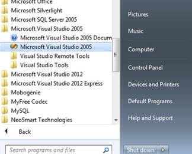
Hiện ra màn hình khởi động của VS2005 như sau:
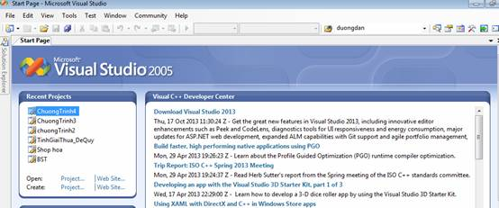
Bước 2. Tạo
một ứng dụng rỗng (kiểu Console)
Với VS2005 nói riêng và VS nói chung, ta có thể xây dựng được rất nhiều loại chương trình: chạy trên web, trên điện thoại thông minh, trên máy tính cá nhân,... Trên máy tính cá nhân cũng có nhiều loại chương trình: ứng dụng winform (vd: chương trình quản lý nhân sự), thư viện (các file DLL), ứng dụng console (có cửa sổ nền đen chữ trắng như màn hình DOS thời xưa),...
Trong số các loại ứng dụng này, ứng dụng console là đơn giản nhất vì không làm việc nhiều với giao diện (không có nút nhấn, không có hộp thả xuống, không có các biểu tượng hình ảnh đẹp mắt,...), do đó, nó rất thích hợp cho những newbie (tân binh) mới chập chững bước vào thế giới lập trình. Do với mục đích là HỌC nên chỉ sử dụng những chức năng cơ bản nhất, không cần những tính năng của mạnh mẽ nên chọn kiểu Console Application.
- Để bắt đầu việc tạo một solution (tạm dịch thoáng là "ứng dụng") mới, ta có nhiều cách để làm.
Cách 1: File → New → Project.
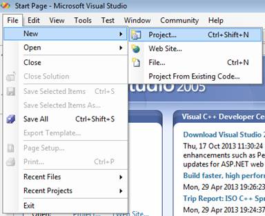
Cách 2: nhấn tổ hợp phím Ctrl + Shift + N.
Cách 3: trong vùng Start Page (khi VS mới khởi động), kích vào Creates Project.
Hiện ra màn hình New Project như sau:
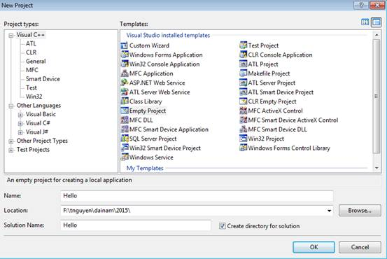
- Trong cửa sổ New Project, đầu tiên kích chọn (bôi đen) ngôn ngữ lập trình là Visual C++ . (nếu không thấy thì chọn trong “Other Languages”
- Bên “templates” chọn “Empty Project”
- Xuống bên dưới Tại vùng “Name” gõ tên ứng dụng, ví dụ “Hello”
- Tại vung “Location” gõ tên thư mục chứa ứng dụng, ví dụ “F:\tnguyen\dainam\2015\” hoặc dùng “Browse” để chọn thư mục cần thiết.
- Tại “Solution Name” nên kích chọn vào ô “Create directory for solution” để tạo mới một thư mục có tên là tên của ứng dụng và sẽ đưa tất cả những tập tin liên quan vào thư mục này (để dể quản lý). Cuối cùng, kích nút OK
Hiện ra màn hình Hello – Microsoft Visual Studio như sau:
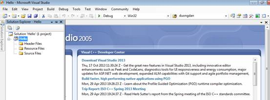
- Chú ý: Nếu không nhìn thấy cửa sổ con “Solution Explorer - Hello” thì có thể kích View → Solution Explorer hay Ctrl + Alt + L để mở ra.
Bước 3.
Thêm mới một tập tin mã nguồn C/C++
Kích phải vào tên project là “Hello” trong cửa sổ Solution Explorer, chọn Add → New Item.
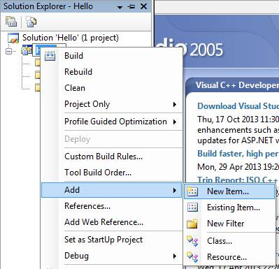
Trong cửa sổ Add New Item, trước tiên, chọn ngôn ngữ của ứng dụng (là Visual C++), sau đó kích chọn “code”, và chọn “C++ File(.cpp)”
nhập tên của tập tin, ví dụ “bt1” và kích nút Add để VS bắt đầu tạo tập tin C để "gắn" vào ứng dụng.
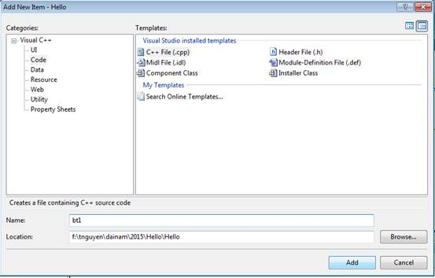
Hiện ra màn hình soạn thảo Hello – Microsoft Visual Studio như sau
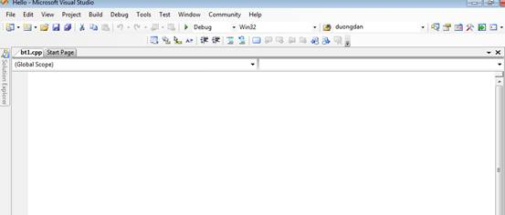
Bước 4. Viết
mã và Biên dịch chương trình
Gõ một chương trình C/C++ vào bên trong vùng trống phía dưới thẻ có tên “bt1.cpp”
Chương trình chỉ có một công việc đơn giản là hiển thị một dòng chào mừng: "Hello world”.
//Chuong trinh
dau tien C++
//In ra dong chu "Hello world"
#include <iostream>
using namespace std;
int main()
{
cout<<"Hello world";
return 0;
}
Nhập nội dung chương trình như hình dưới và kích chọn Build → Build Solution hoặc nhấn phím F6 để biên dịch chương trình.
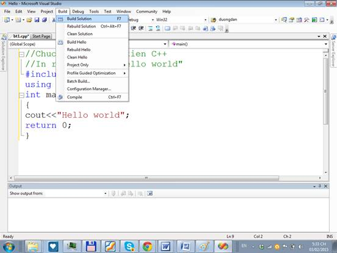
Kết quả biên dịch được hiển thị ở cửa sổ Output. Liếc nhìn hàng cuối cùng của cửa sổ Output thấy "1 succeeded, 0 failed" nghĩa là đã biên dịch thành công, sẵn sàng chạy chương trình.
Bước 5. Thực
thi chương trình
Kích chọn Debug → Start without Debugging (hoặc nhấn phím Ctrl - F5) để thực thi (chạy) chương trình. Kết quả chỉ đơn giản là một dòng chữ chào mừng màu trắng trên nền đen.
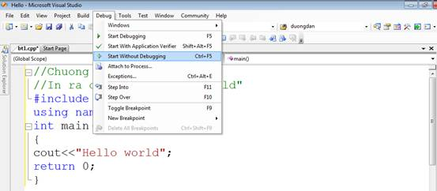
Kết quả như sau:
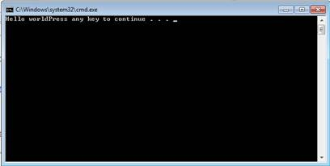
Đến đây coi như xong viết xong một ứng dụng C/C++ đơn giản nhất trên Visual C++ 2005. Để làm các bài tập khác về C, chỉ đơn giản thay đổi nội dung chương trình ở vùng bt1.cpp trong bước 3 (Viết mã và Biên dịch chương trình).